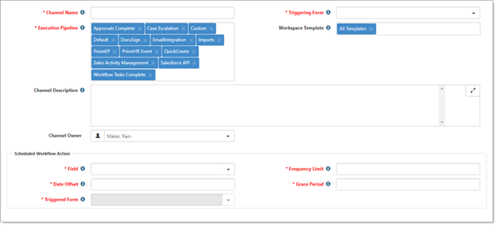
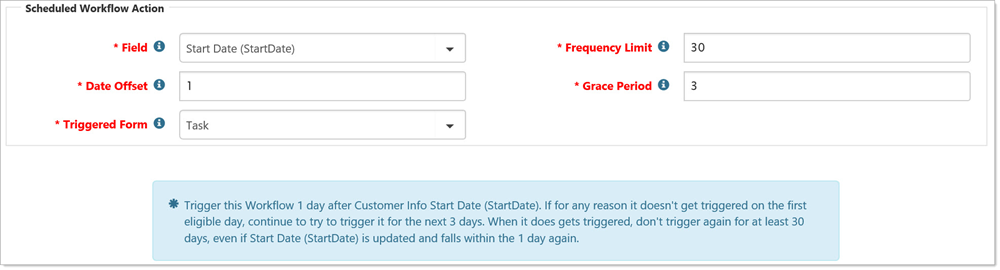

To configure scheduled workflows:
Go to System Admin  > Workflow Channels.
> Workflow Channels.
The Workflow Channels dashboard opens.
Click Add.
The Choose Workflow Triggering Type dialog opens with options to select Real Time or Scheduled.
When you select Scheduled, the Add Workflow Channel wizard opens with Step 1 Channel. In this step, you need to configure the date that triggers the scheduled Workflow Action.

Configure the following options:
|
Channel Name |
Provide a descriptive name of the workflow process. |
|
Triggering Form |
Select the form to trigger the workflow. |
|
Field |
Presents a list of available Date fields from the Triggering Form selected. |
|
Frequency Limit |
The Workflow task or dataform is triggered once every X days based on the value of this field. |
|
Date Offset |
The number of days (before or after the date stored in the triggering field) this workflow item triggers. |
|
Grace Period |
The number of days, starting with the offset date that the workflow attempts to trigger. When this grace period has ended, the workflow does not trigger again until the frequency limit has passed, and the triggering conditions are again met. |
|
Triggered Form |
The task or dataform to be generated when the triggering conditions are met. |
After you have configured the Scheduled Workflow Action, you receive a brief synopsis of the Schedule.

When the last field is completed, the wizard progresses to Step 2 Content.
After your configured workflow is saved, these conditions are evaluated by a scheduled process (Generate Scheduled Workflows) to determine if the date field combined with the other workflow schedule options as well as any additional Conditions added in Step 4 (Conditions) are met.
Because these workflow triggers are scheduled, the real time field analysis to determine if a field has changed (IsDirty) cannot happen. Because of this, notice that the IsDirty qualifier is not available when adding additional triggering conditions to scheduled tasks.
If all the triggering conditions are met, the dataform or task is generated from the Workflow. These actions can then trigger other dependent workflow items (such as a second task spawned when the scheduled task is complete) or completely new workflow channels. In this way, scheduled workflows can drive your business processes based on milestone triggering dates stored in your system.